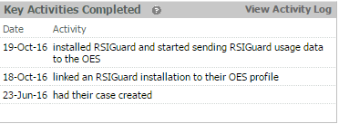
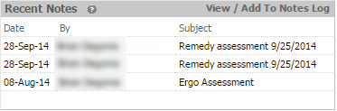
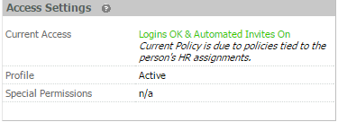
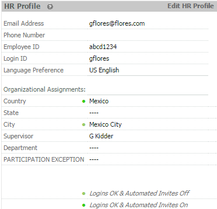
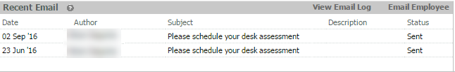

Risk Summary: Defines an employee's overall risk level, which could include Standard Office, Notebook Computer or Desktop Computer, and Discomfort.
To view an employee's specific Issues & Facts that determined this risk level, click the link View Issues & Facts.

Key Activities Completed: Displays the most recent OES activities this employee has completed, excluding logins. To see a full list of completed OES activity, including logins, click the link View Activity Log.

Recent Notes: Displays the most recent notes in this employee's OES profile. To view all notes, or to create a note for this employee, click the link View/Add to Notes Log.

Access Settings: Shows the user's current access policy, the user's profile status (Active or Inactive), and Special Permissions that apply, if applicable.

- Logins OK – The user's account is Active, and the user can log in to OES.
- Logins Blocked – The user's account is Not Active (or otherwise blocked by an Attribute setting), so the user cannot log in to OES.
- Automated Invites On – The user will not be sent automated invites from the OES system.
- Automated Invites Off - The user will not be sent automated invites from the OES system (but can be sent all other automated OES emails).
HR Profile
Shows key profile data for the user. To edit, click Edit HR Profile.

Recent Messages: Displays the most recent automated and manual emails sent to this employee through the OES, not including Password Recovery emails. To see a full list of emails sent to this employee, click the link View Message Log. To send a message, click Send Message to Employee.
